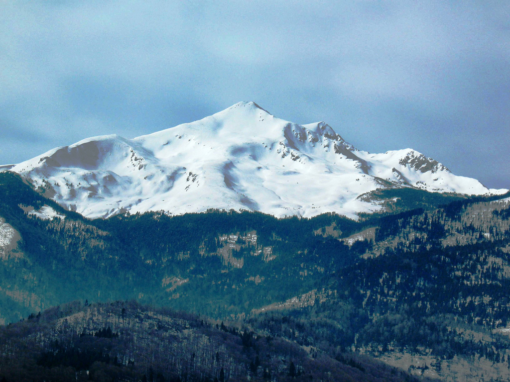
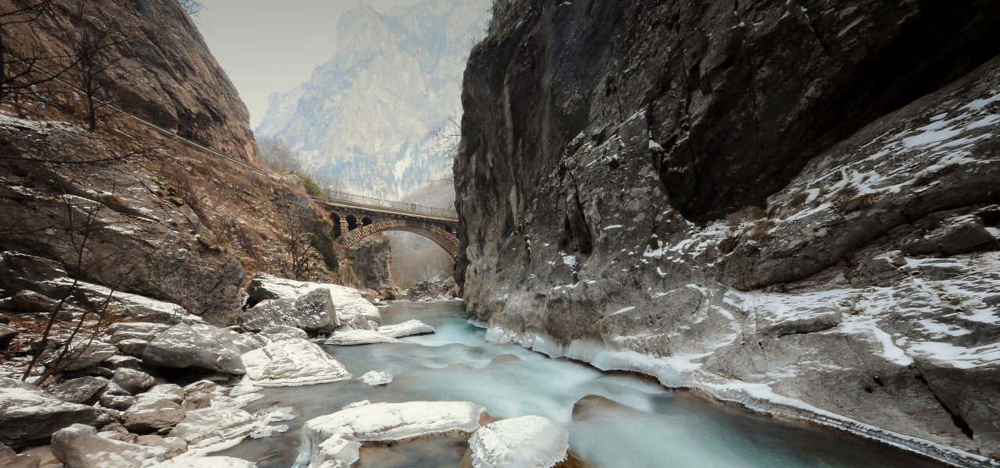
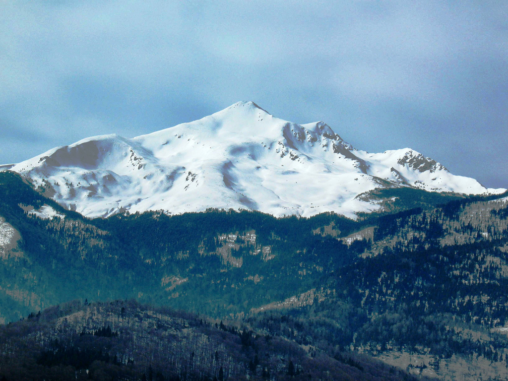
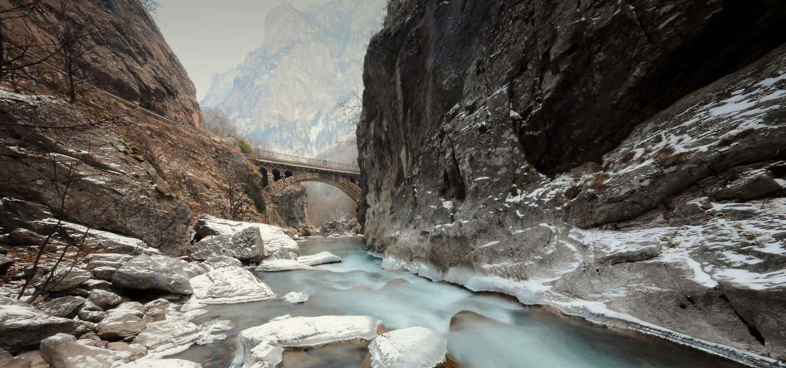
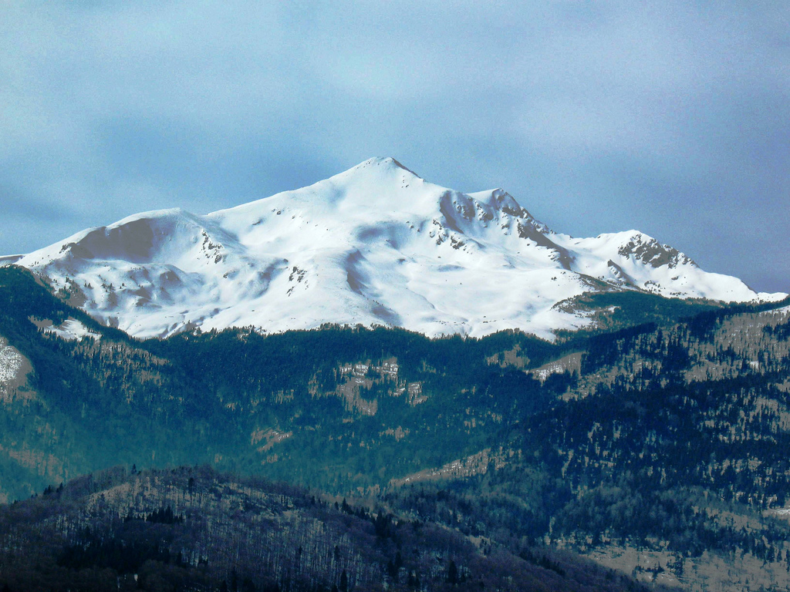
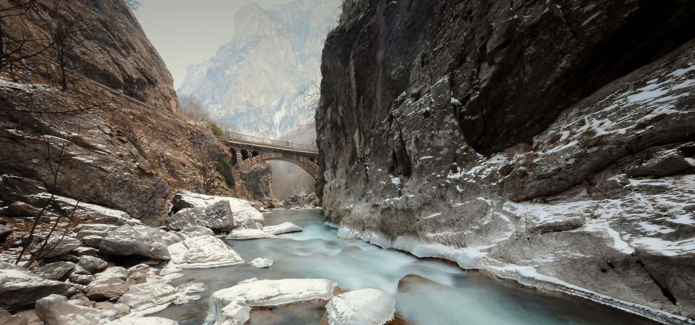
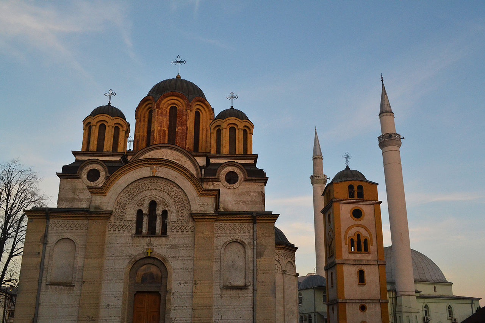
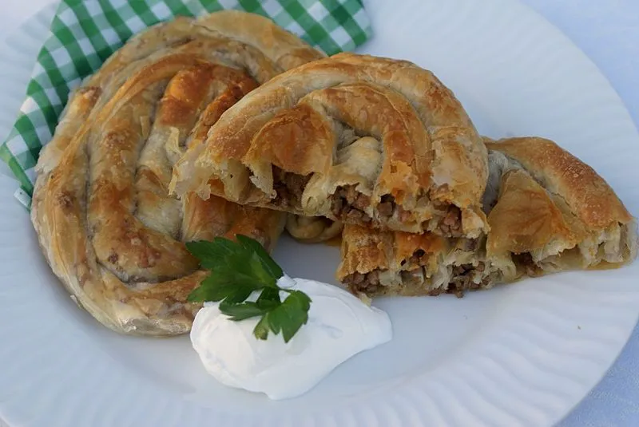

Kosovo, self-declared independent country in the Balkans region of Europe. Although the United States and most members of the European Union (EU) recognized Kosovo’s declaration of independence from Serbia in 2008, Serbia, Russia, and a significant number of other countries—including several EU members—did not. Given this lack of international consensus, Kosovo was not immediately admitted to the United Nations (UN). In 2010 the International Court of Justice ruled that Kosovo’s declaration of independence did not violate international law, but Serbia rejected that decision.
Kosovo was ruled by the Ottoman Empire from the mid-15th to the early 20th century, a period when Islam grew in importance and the population of Albanian speakers in the region increased. In the early 20th century Kosovo was incorporated into Serbia (later part of Yugoslavia). By the second half of the century, the largely Muslim ethnic Albanians outnumbered the predominantly Eastern Orthodox Serbs in Kosovo, and interethnic tensions frequently roiled the province.
In 1998 an ethnic Albanian-led secessionist rebellion escalated into an international crisis (see Kosovo conflict), which culminated in 1999 in an air bombardment of Yugoslavia—by then a rump of the former federal state, comprising only Serbia and Montenegro—by the North Atlantic Treaty Organization (NATO). Following the restoration of peace, Kosovo was administered by the UN Interim Administrative Mission in Kosovo. Throughout this period—in the course of which Yugoslavia changed its name to Serbia and Montenegro (2003) and then separated into those independent states (2006)—Serbia continued to consider Kosovo part of its territory. Nevertheless, under UN supervision, Kosovo developed the structures of an independent country, and in February 2008 it formally declared independence from Serbia. An EU mission charged with overseeing police, judicial, and customs activities largely replaced the UN presence later that year. Pristina (Albanian: Prishtinë; Serbian: Priština) is the capital and largest city.
Kosovo is in the middle of the Southeastern Europe. Having occupied the central position in the Balkan Peninsula, Kosovo represents important connection between Central and South Europe, Adriatic Sea, and Black Sea. Surface of Kosovo is 10,908.1 km². The climate in Kosovo is middle continental with hot summer and cold winter. Kosovo has about 2 million inhabitants. Its density is about 193 people per km², and is divided into 33 municipalities.
The borders of Kosovo are largely mountainous, characterized by sharp peaks and narrow valleys. The Sharr Mountains lie along the southern border with North Macedonia, while the Kopaonik Mountains are situated along the northeastern border with Serbia. The highest point is Mount Gjeravica (Ðeravica), at 8,714 feet (2,656 metres), on the western border with Albania. The interior terrain comprises high plains and rolling hills; about three-fourths of the country lies between about 1,600 and 5,000 feet (500 and 1,500 metres) above sea level. Limestone caves are found in several parts of the country.
MAIN LAKES IN KOSOVO, SURFACE IN KM²
| Name | Municipality | Surface in km ² |
|---|---|---|
| Gazivodë | Z.Potok | 9,10 |
| Radoniq | Gjakovë | 5,96 |
| Batllavë | Podujevë | 3,27 |
| Badovc | Prishtinë | 2,57 |
MAIN MOUNTAINS IN KOSOVO
| Name | Region | Height in meters |
|---|---|---|
| Gjeravica | Pejë | 2.656 |
| Bistra | Ferizaj | 2.640 |
| Marjash | Pejë | 2.530 |
| Badovc | Luboteni | 2.496 |



As a young and attractive country, Kosovo has a very rich culture and history. Kosovo Cultural Heritage was created by ancients Illyrians and Romans with later indications by different empires in more recent centuries. When traveling around Kosovo, there are many opportunities to experience the very old civilization, unique culture, and distinctive traditions which are documented in archeological parks, natural parks, galleries, tower houses (Kullas) in other words strongholds, religious monuments, and museums.
Kosovo cultures is characterized by its patriarchal tradition. For centuries, the ethnic Albanian villagers have lived in Kosovo within extensive families among members consisting of 70 to 100 which were ruled by a chosen patriarch. Up to this date, the Kosovar society is still built on family units in the majority of the rural areas, even though the family structure has progressively eroded since the end of World War II.The Kosovars constitute of the Gheg sub-group in which the basis of its social system if based on the clan or “fis”. Among this sub-group is also the sub-clan which is recognized as “vellazeri” consisting of a group of blood-related families. The clans are extremely devoted to their members and the great blood feuds that were frequent in the past century are no longer present. Although there are various religious beliefs among family units at times, they have been prevailed over by the great power of the clan and the members’ devotion towards it.
Staple foods in Kosovo include potatoes, rice, beans, and pasta. Meat is usually grilled and served with side dishes of stewed potatoes and vegetables. Popular meats include chicken, beef, and lamb. Popular vegetables include tomatoes, peppers, cucumbers, and onions. Ҫorbë (Albanian goulash with beans, cabbage, potatoes, and other vegetables) is one of the most common national dishes. Another common dish is byrek, a pie made of phyllo dough layered with a filling of spinach, feta cheese, leeks, cabbage, and pumpkin.
